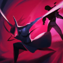

核心裝備
 殞落王者之劍
殞落王者之劍 奪魄之鐮
奪魄之鐮 致死宣告
致死宣告 無盡之刃
無盡之刃 守護天使
守護天使
以下為本站 7.2d 校正後的標準配置；實戰仍需依敵方陣容調整。


技能優先：Q > E > W
犽凝每第二次普攻會造成魔法傷害，並且擁有較高的暴擊率成長，能持續打出物理與魔法混合傷害。
向前突刺並對直線上的敵人造成傷害。命中敵人會累積一層效果；累積兩層後，下一次施放會讓犽凝向前衝刺並擊飛路徑上的敵人。此技能視同普攻。
向前方扇形範圍斬擊，依敵人的最大生命造成物理與魔法傷害。命中英雄後會獲得護盾，命中越多英雄，護盾效果越高。
靈魂離開本體向前移動並逐漸提升跑速。效果期間對敵人造成的部分傷害會被記錄；再次施放或時間結束後，犽凝返回本體並結算額外傷害。

蓄力後向前斬擊並瞬移至最後命中的敵人身後，對路徑上的敵人造成物理與魔法傷害，並將命中的敵人拉向終點。
強化1技擊飛 → 2技護盾 → 普攻 → 1技 → 3技追擊
先在野怪上疊好兩層一技，再帶著擊飛進線；三技可留到敵人交位移後再追。
3技出魂 → 強化1技 → 4技 → 2技 → 普攻 → 返回本體
三技創造安全回點，擊飛接大絕提高命中率；打完主要傷害立即返回，避免被反包。
3技側翼 → 4技聚敵 → 2技護盾 → 1技 → 普攻 → 返回
從側翼用大絕切開陣型，完成一輪輸出後回到安全位置；不要從正面穿過完整控制鏈。
清野時穿插普攻並在營地間保留一技層數，帶著第三段擊飛進線可大幅提高 Gank 成功率。沒有擊飛或隊友控制時不宜強行抓人，先穩定升級與補裝。
兩件暴擊裝成形後，單抓與物件團威脅大幅提升。三技先建立安全回點，再從側翼用擊飛或大絕切入；完成爆發後立即返回，避免在敵方深處久留。
正面進場容易被完整控制鏈攔下，應等待隊友先手或從側翼尋找多人大絕。即使傷害很高，也要保留重擊並避免為追擊離開遠古飛龍或巴龍區。
對局名單是本站依英雄機制與目前配置整理的參考，不等同固定勝率。
打野先維持標準刷野與節奏裝，只有敵方陣容或我方前排需求明顯時才調整。
觸發：敵方前排多，物件團與正面團戰會長時間卡在高生命目標上。
斷切能直接提高對高生命敵人的普攻傷害。
觸發：敵方能在你進場或搶物件前快速把你秒掉。
魔提斯深淵提供魔防與低血量魔法護盾，比單純增加輸出更能保住進場或持續輸出。
觸發：進場或搶物件時經常被控制鏈直接中斷節奏。
先購買水銀飾帶取得主動解控，之後再合成水星彎刀；水銀飾帶是合成組件，不是另一件要與水星彎刀互換的成裝。
犧牲部分輸出型傳奇符文，換取韌性與緩速抗性。
觸發：敵方前排、鬥士或吸血核心能在物件團長時間回復。
標準配置已經有重創，維持即可。
觸發：我方陣容沒有可靠第一承傷點，團戰需要有人更早進場吸收注意力。
若標準配置已經有半坦容錯，就不必再犧牲核心傷害。
提醒：「缺前排」不代表所有打野都要改坦裝；刺客、法師與射手打野硬轉坦通常會失去英雄價值。
7.2a 打野正式版：技能名稱與核心機制依 Riot Games 台灣《激鬥峽谷》英雄頁及本站既有正式英雄資料校正；出裝、符文、技能順序、對局與前中後期節奏依目前 7.2a 打野定位整理。｜v56：完成打野第五批正式版，完整沿用李星固定打野母版，補齊起手裝、核心三件、五件成裝、15 級加點、三組連招、對局與實戰節奏。｜v90：7.2d：基礎物防由 43 下調至 37；巴龍路前期換血容錯降低。
本站於 2026-08-27 依 Patch 7.2d 重新檢查此配置。 Tier、出裝、符文與對局屬於 Wild Rift Guide 的整理與分析，不是 Riot Games 官方推薦；版本改動後會再依官方公告與實戰資料校正。